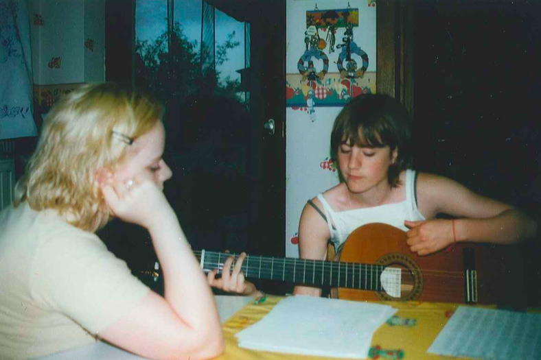

Going the extra 348 miles
A story with a customarily happy ending but an unusually distant beginning.
Once upon a time, in Arlon, Belgium...
As the daughter of an organist, I grew up in a house filled with music. When my dad played at home or in concert I used to turn the pages of the score for him even though I couldn’t read music. I just followed the gaze of his eyes and somehow it worked.
That was pretty good but when I turned 16 I wanted more. I wanted to make some more “noise” in the family so my dad gave me an acoustic guitar.
I spent two years playing in a small teaching group but because I never really practiced outside the class I wasn’t particularly good. But I did enjoy it and I even played in front of my family once, with my sister singing along with me.
When I left home for my studies, I took my guitar with me but it pretty much stayed in its case in the corner of my student room untouched for 4 years. Then I took it back to my parents’ place and forgot about it.
Last year I moved to London where I met Jan and Steve, the guys who started The Shed (back then called Guitar Giving) and I instantly fell in love with the project. I understood that I could give a much better life to the wonderful instrument which was sleeping in my parents’ loft and, even more importantly, that it will make someone really happy.
My guitar found a new loving home at the World Heart Beat Music Academy and I’m really pleased with that.